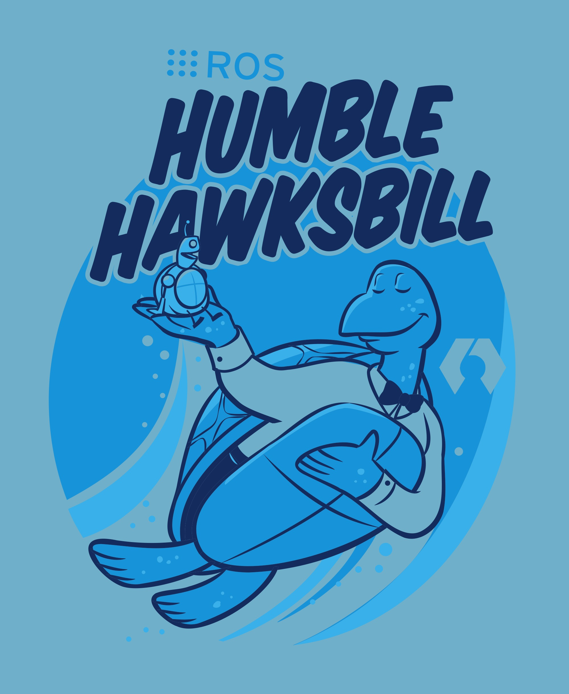
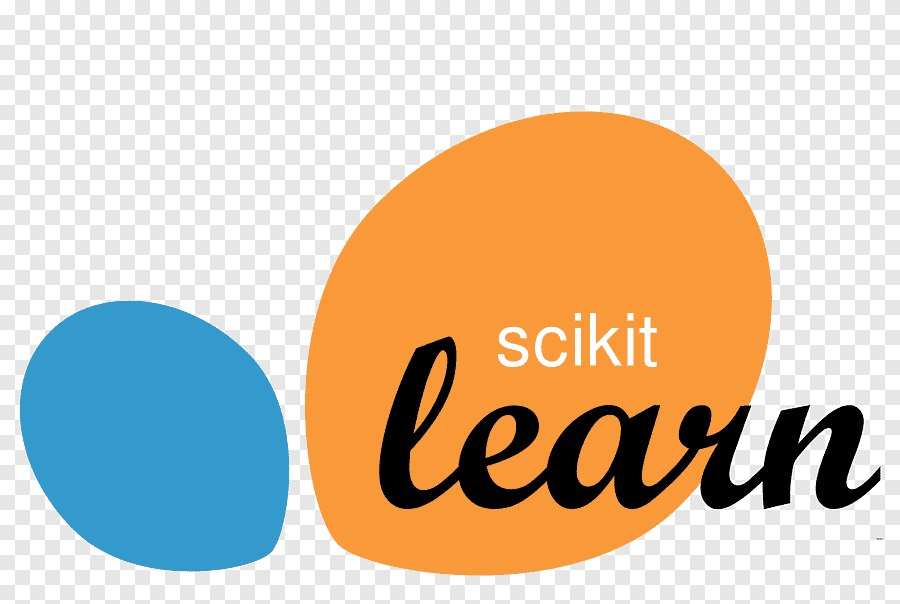

À propos de moi
Je suis Lucas Carpentier, étudiant en cinquième année à l'école d'ingénieur SeaTech Toulon, spécialisé en mécatronique, robotique et intelligence artificielle.
Passionné par la technologie et l'innovation, j'ai développé des compétences en développement logiciel, programmation et contrôle de systèmes robotiques.
Découvrez mes langages de programmation préférés :

Python 3

C++
Java
Les outils que j'utilise le plus :
Tensorflow

ROS2 Humble
Kéras

Numpy

Pandas
